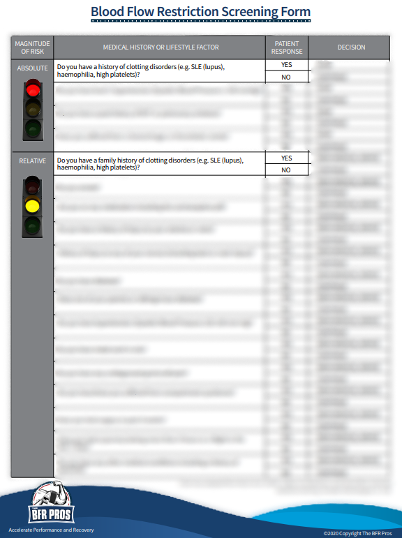
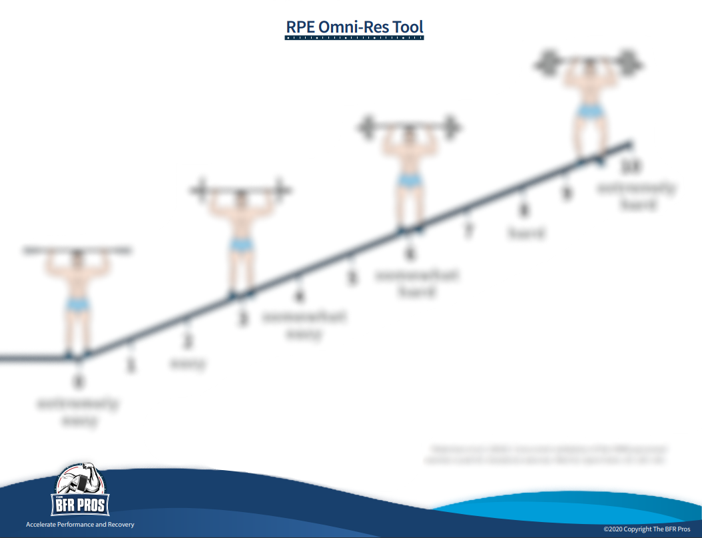
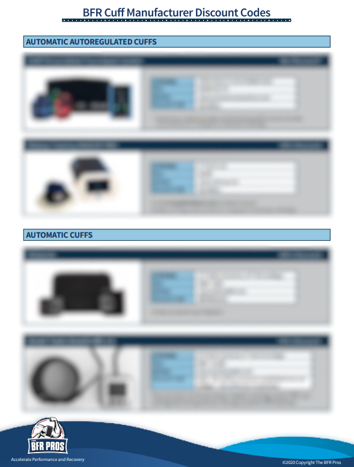
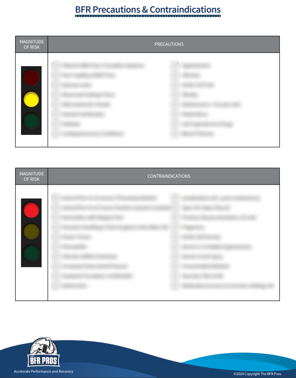
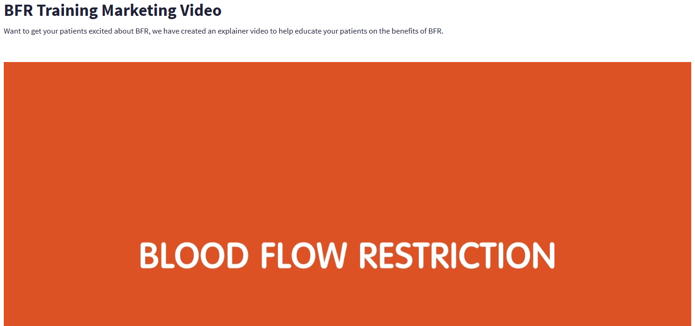
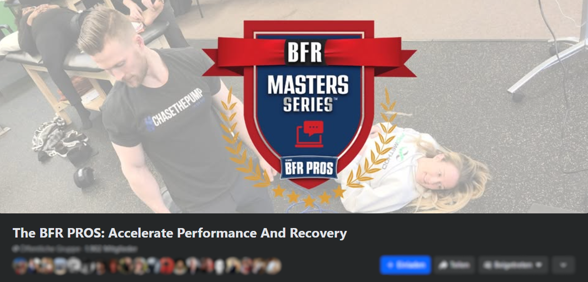
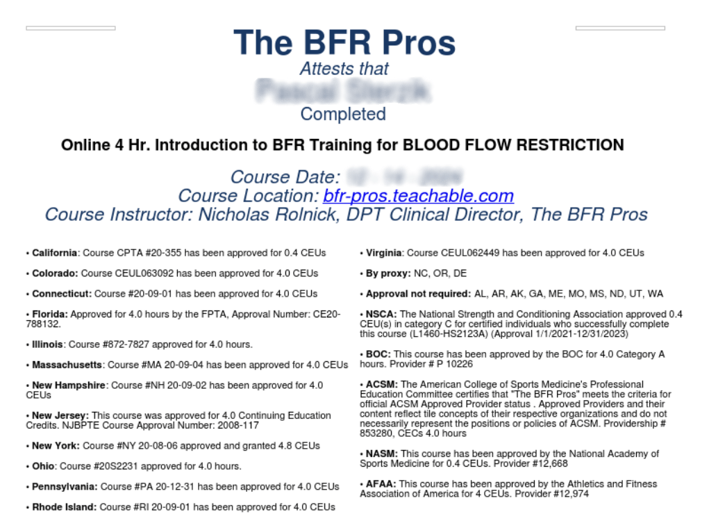

Everything you need to become a confident, successful BFR Provider. 11.75 CEUs of comprehensive, evidence-based training.
The Complete Certification Package combines our core curriculum with advanced modules to give you a comprehensive BFR education — from foundational science to clinical application.

The core 13-module curriculum covering everything from BFR physiology and mechanisms to practical application, programming, and clinical decision-making. From beginner to advanced.

Module 14 of the Masters Series. Deep-dive clinical case studies showing real-world BFR application across different patient populations and conditions.

Stay current with the latest BFR research, emerging applications, and updated best practices. Essential for keeping your practice evidence-based.
Comprehensive comparison of BFR device features, capabilities, and clinical considerations. Make informed decisions about equipment without brand bias.
Click each course to explore the complete module breakdown, video lengths, and learning objectives.
The core curriculum covering everything from BFR physiology and mechanisms to practical application, programming, and clinical decision-making.
Introducing the course, the three hurdles of blood flow restriction training and an overview of each module.
10:12A contextual overview of how BFR has gained popularity in rehabilitation and fitness since its inception 50 years ago.
5:23The context and history surrounding the application of BFR in rehab and fitness settings.
8:30The consequence of injury and disuse on the musculo-skeletal system and what you can do as a BFR provider to address it.
11:49The role of BFR training with respect to traditional low- and heavy-load strength training.
13:09Fatigue and the importance of exertion in the muscle-building process.
10:21The likely primary mechanisms behind why BFR training is so effective in building muscle and creating whole-body responses.
13:18Safety and how whole-body responses affect populations at higher risk using BFR above and beyond healthy individuals.
38:32Cell swelling and ischemic pre- and post-conditioning — augmenting performance and minimizing disuse atrophy.
10:37Understanding exercise under occlusion — building muscle mass and strength through aerobic exercise with BFR.
26:59What research says about optimizing muscle growth with low-load BFR training using loads between 20-40% 1RM.
47:02Determining safe BFR application and integrating the pillars into a progressive, periodized model for fitness and rehabilitation.
57:30BFR's effect on tendon and bone adaptation, pain-relieving properties, and augmenting sports performance.
17:22Everything covered in the course brought together — conclusions about the role of low-load BFR exercise.
6:01+ Survey, Bonus Material, Quiz & CEU Certification
Deep-dive clinical case studies demonstrating the effectiveness and versatility of BFR across different patient populations and conditions.
The Pillars of BFR Training and Post-Surgical BFR Screening.
20:10How BFR helped accelerate the recovery process for a 19-year-old female athlete who underwent ACL surgery.
11:40How BFR effectively improved muscle mass and strength in a 99-year-old male suffering from sarcopenia.
14:50A 67-year-old sedentary female using a high-frequency BFR walking home-based program.
8:51Improving lower leg strength and reducing knee joint swelling in a 17-year-old with reactive arthritis via home-based BFR.
14:06In-season BFR rehabilitation on two collegiate decathletes with long-standing patellar tendinopathy.
22:01Each case study includes a quiz + Survey & CEU Certification
Review of 5 key publications that shape clinical understanding of BFR and implementation in practice.
Short background of the BFR Pros and overview of the webinar content.
12:06Rolnick (2021) — the medical screening funnel algorithm that reduces risk of applying BFR to inappropriate clients.
18:01Cerqueira (2021) — the minimum pressure shown to meaningfully accelerate fatigue during BFR exercise.
12:02Noyes (2021) — successful BFR application in chronic atrophic post-surgical knee patients.
14:46De Queiros (2021) — muscle activation and applied pressure's potential role in BFR exercise.
17:22Centner (2021) — how BFR can improve patellar tendon properties similar to heavy-load strength training.
20:27Each paper includes a quiz + Survey, References & CEU Certification
Comprehensive comparison of BFR device features, capabilities, and clinical considerations — make informed decisions about equipment without brand bias.
Device features relevant to the physiological, perceptual, and safety aspects of BFR exercise — autoregulation, bladder design, and set/interface pressure.
97:48When is it appropriate to perform practical BFR using wrapping straps versus elastic bands?
+ Survey & CEU Certification
Every enrollment includes these practical tools and resources to help you implement BFR confidently from day one.
Ready-to-use waiver template to protect your practice when implementing BFR with clients and patients.

Comprehensive screening questionnaire to identify contraindications and ensure safe BFR application.

Rate of Perceived Exertion tool for accurately monitoring and prescribing BFR exercise intensity.

Exclusive discount codes for top BFR devices — save on equipment from trusted manufacturers.
Complete reference list for every module — dive deeper into the research behind each topic.
Full course content in PDF format for offline study, note-taking, and quick reference.

Complete list of precautions and contraindications — your quick-reference safety checklist.
Nutritional guidelines to optimize outcomes when combining BFR training with proper nutrition.
Sport-specific BFR programming templates for athletic populations and performance enhancement.

Professional marketing video to promote BFR services to your patients and clients.

Join a community of BFR providers — ask questions, share cases, and learn from peers.
Step-by-step guide for applying your CEUs to your specific accrediting body.
Watch the introduction module to get a feel for the course content and teaching style.
Upon completing the full course package, you'll receive an official Certificate of Completion from The BFR Pros — recognized across the industry as the gold standard in BFR education.
Display it in your clinic, add it to your LinkedIn, and show patients and clients that you've invested in evidence-based BFR training from the leaders in the field.

The BFR Pros certification is approved for continuing education credits by multiple accrediting bodies, covering physical therapists, athletic trainers, strength & conditioning professionals, and more.
With 11.75 total CEUs available across the Complete Certification Package, you can fulfill your continuing education requirements while mastering a skill that differentiates your practice.
View state-by-state approval details →


$654 if purchased separately
Save $205 with the bundle
30-day full money-back guarantee. No questions asked.
Chose BFR Pros over Owens Recovery Science & Smart Tools because of how they stay up-to-date with emerging research. The content is thorough, practical, and immediately applicable.
Owner, PhysioStrength
Gained a sound knowledge base for implementing BFR and understanding when it's best utilized. The course structure makes complex concepts accessible.
Owner, Perfusion Point Therapy
Did thorough research before choosing BFR Pros — and I'm so glad I did. The combination of research depth and clinical insight is unmatched in BFR education.
Stapleford Health and Rehab, Regina
Join 712+ professionals who have already transformed their practice with evidence-based BFR training.
Get Certified — $449 4.7 stars out of 712 reviews